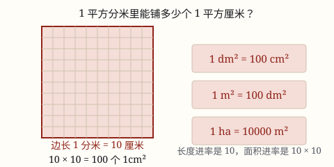

面积单位的换算
长度的进率是 10，面积的进率是 10 × 10 = 100。想通这一点，换算就不用背表了。
| 所属主题 | 图形的认识与测量 |
|---|---|
| 所属模块 | 图形与几何 |
| 课标学段 | 第二学段（3~4年级） |
| 前置知识 | 面积和面积单位、长方形和正方形的面积 |
| 核心素养 | 量感推理意识 |
课标要求
| 图形与几何·图形的认识与测量 | 认识长度单位千米，知道分米、毫米；认识面积单位厘米²、分米²、米²；能进行简单的单位换算；能恰当地选择单位估测一些物体的长度和面积，会进行测量。 印刷第 29 页 行为动词：理解 |
|---|
说明
相邻两个长度单位之间的进率是 10：1 \text分米 = 10 \text厘米，1 \text米 = 10 \text分米。
面积单位是「小正方形」，正方形有长和宽两个方向都放大，所以面积单位之间的进率是 10 × 10 = 100。
于是：1 \textdm^2 = 100 \textcm^2，1 \textm^2 = 100 \textdm^2，1 \textm^2 = 10000 \textcm^2。更大的面积单位还有公顷：1 \text公顷 = 10000 \textm^2（边长 100 米的正方形那么大）。
使用场景
把大单位化成小单位：教室面积用平方米，要算能铺多少块 1 平方分米的地垫，就得化成平方分米。
把小单位聚成大单位：量的结果是 30000 平方厘米，读起来别扭，聚成 3 平方米更清楚。
土地和场地：操场、农田、公园用公顷或平方米，不用平方厘米。
检查答案合不合理：算出一张邮票 200 平方分米，就该回头看看单位是不是弄错了。
注意点
面积进率是 100，不是 10。1 \textm^2 = 100 \textdm^2，不是 10——这是最容易错的一处。
公顷那一级是 10000。1 \text公顷 = 10000 \textm^2，因为 1 公顷是边长 100 米的正方形，100 × 100 = 10000。不要把「公顷和平方米」也当成 100。
大化小用乘法，小聚大用除法。化成更小的单位，个数会变多，所以乘进率；聚成更大的单位，个数变少，所以除以进率。
换算只在相邻单位之间一步到位更安全。平方厘米直接换平方米要除以 10000，中间经过平方分米不容易错。
为什么是这样

图 1：边长 1 分米等于 10 厘米，所以一个平方分米里正好铺 100 个平方厘米
算理推导
长度进率：1 \text分米 = 10 \text厘米。也就是说，1 分米长的边，能摆 10 个 1 厘米。
现在看面积：一个边长 1 分米的正方形，横着能摆 10 个 1 厘米的小正方形，竖着也能摆 10 个。
一共 10 × 10 = 100 个。所以 1 \textdm^2 = 100 \textcm^2。
规律：长度进率是 10，面积进率就是两个 10 相乘 = 100；长度进率是 100（如米到厘米），面积进率就是 100 × 100 = 10000。想通这一点，换算表不用背。
动手实验
在纸上画一个 10 厘米 × 10 厘米的正方形（就是 1 平方分米），把它分成 1 厘米的小格，数一数是不是正好 100 个。再想一想：1 平方米等于多少平方分米？把「10」换成「10 × 10」就明白了。
按场景的例题
例 1（场景：计量与估算） 把课桌面积化成平方厘米
课桌面面积是 24 平方分米，合多少平方厘米？
解：由平方分米化成平方厘米是化成更小的单位，个数变多，乘进率 100：24 × 100 = 2400。
答：2400 平方厘米。
例 2（场景：校园生活） 操场面积用公顷表示
学校操场长 100 米、宽 50 米，面积是多少平方米？合多少公顷？
解：面积 100 × 50 = 5000 平方米。化成公顷要除以 10000：5000 ÷ 10000 = 0.5。
答：5000 平方米，合 0.5 公顷。
例 3（场景：农业生产） 一块长方形菜地
菜地长 30 米、宽 20 米，面积多少平方米？如果每平方米收 5 千克菜，一共收多少千克？
解：面积 30 × 20 = 600 平方米；产量 600 × 5 = 3000 千克。
答：600 平方米，共收 3000 千克。
常用推论
面积单位换算通法：先想长度进率是几，面积的进率就是它自己乘自己。
化成更小的单位 → 乘进率；聚成更大的单位 → 除以进率。
1 \text公顷 = 10000 \textm^2，等于边长 100 米的正方形的面积。
1 \textkm^2 = 100 \text公顷 = 1000000 \textm^2。
易错点
错认为 1 \textm^2 = 10 \textdm^2。
为什么错把长度的进率直接搬到了面积上。正方形要在长和宽两个方向各放大 10 倍，面积就放大 10 × 10 = 100 倍。
正确1 \textm^2 = 100 \textdm^2。
错认为 1 \text公顷 = 100 \textm^2。
为什么错把「公顷和平方米」也当成相邻单位 100。公顷对应的是边长 100 米的正方形，不是 10 米。
正确1 \text公顷 = 100 × 100 = 10000 \textm^2。
错把 30000 平方厘米化成 300 平方米。
为什么错平方厘米到平方米中间隔了一级，进率是 10000，不是 100。
正确30000 ÷ 10000 = 3 平方米。
直观理解
把单位换算想成换地砖：原来铺满房间要 24 块大砖（平方分米），现在换成只有它百分之一大的小砖（平方厘米），要铺的块数当然要乘 100。砖越小，块数越多。
面积单位相邻间，进率一百记心间；只有公顷到平方米，一万才是那答案。